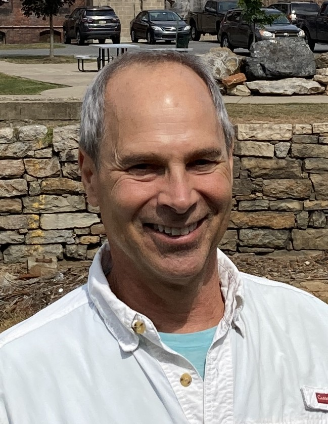

Dr. Charles “Chuck” A. Cravotta III
Cravotta Geochemical Consulting (CGC) is a limited liability company that conducts independent environmental consulting. Dr. Charles “Chuck” A. Cravotta III is the sole member of CGC.
Dr. Cravotta is an internationally recognized scientist with over four decades of professional experience, primarily with the U.S. Geological Survey (USGS). He served as a research hydrologist at the USGS Pennsylvania Water Science Center from 1987 until his retirement from civil service in 2023. His work has focused on geochemical and hydrological processes that control water quality, including the sources, transport, and attenuation of metals and nutrients in both undisturbed and mining-impacted watersheds and aquifers. He continues such environmental work through CGC, where he applies his expertise to address environmental challenges related to watershed restoration and to guide research by university students.
Dr. Cravotta’s research integrates field, laboratory, and computer modeling methods. He is considered an expert on acid mine drainage (AMD) and is renowned for the development of geochemical modeling tools, such as PHREEQ-N-AMDTreat, which simulate changes in water quality during passive and active treatment of AMD. His research has also explored the potential recovery of rare earth elements from AMD treatment wastes. His extensive publication record includes numerous peer-reviewed articles on AMD, groundwater quality, and environmental remediation.
Dr. Cravotta holds a Ph.D. in Geochemistry and a B.A. in Environmental Sciences. He is a registered professional geologist in Pennsylvania and has served as an adjunct faculty member at the University of Pittsburgh and Pennsylvania State University.
- Ph.D. Geochemistry
- Registered P.G., Pennsylvania
- 40+ years experience
- USGS 1987–2023